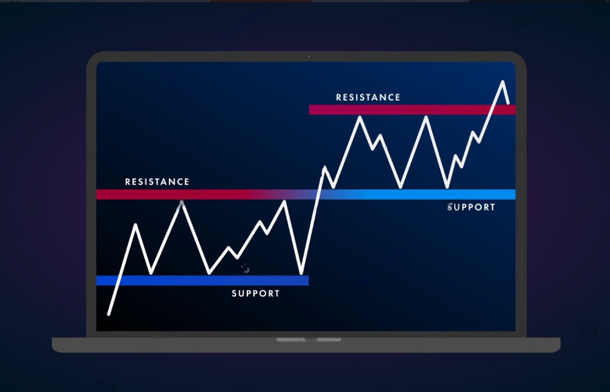
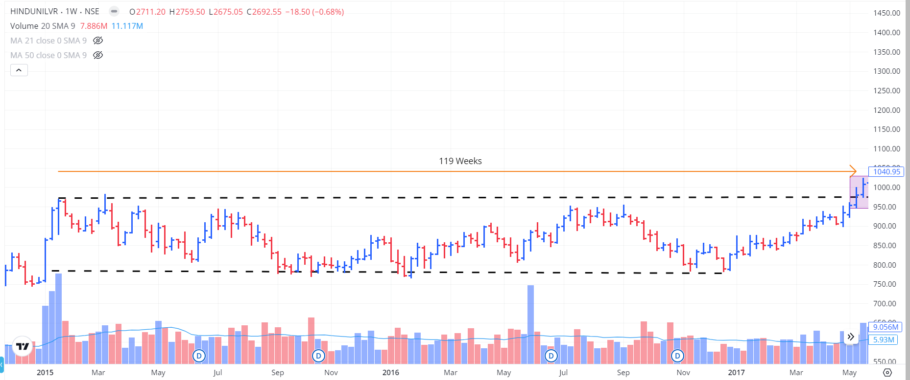
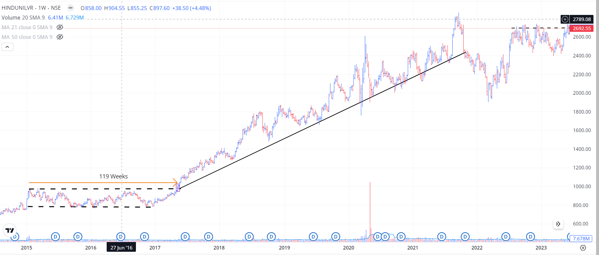

What is it all about?
Cracking the Code: Horizontal Line Breakout Trading Hey there! Today, we're diving into one of the simplest yet most effective trading strategies out there: horizontal line breakout trading. This method is all about spotting key price levels and catching the action when the price breaks through. Whether you're just starting or have been in the game for a while, mastering this technique can seriously up your trading game. What’s a Horizontal Line Breakout Anyway? So, what's the deal with horizontal line breakouts? It's pretty straightforward. A breakout happens when the price of a stock or any other asset breaks through a significant level where it’s been hanging around for a while—like a ceiling (resistance) or a floor (support). When the price finally busts through, it often signals a new trend. Think of it as the market saying, "Alright, enough of this; let's move on!" Focusing on Long – Horizontal BO For the sake of simplicity, I’ll be focusing on a Long – Horizontal BO only, i.e., a breakout above a resistance, something of this sort:  As you can see, the above picture is a snapshot of the price of HINDUSTAN UNILEVER from Mar-2015 to May-2017, and the stock consolidated for 119 trading weeks! But towards the right side, the pink box shows the candle breaking the resistance level of about ₹ 975, and the price finally closed above that level. The Aftermath of a Breakout So, let’s see what would have happened if we bought the stock at the closing just above the breakout at ₹ 1000.  Woah, isn’t that something! The stock just shot up through the roof! I wouldn’t comment on how much return it would have given if we bought it after the breakout, as it depends on the exit price just as much as the entry price. As we will see later, the setup isn’t all roses and rainbows, thanks to the exit price being subjective. The Exit Dilemma Here’s the thing about this system: while the entry is well-defined technically, the exit isn’t. 99/100 times, this trade will be taken when the stock breaks out from its all-time high (ATH) level and forms a new ATH. That’s where the problem comes in. You see, if you’re trading a stock that isn’t at its ATH, you obviously have a set of resistances above your initial buying price, which can serve as short- and long-term targets. But in this case, the stock is entering uncharted territory, making it all the more interesting. So that’s the exit dilemma, and we’ll deal with this soon. For now, we have one more thing to discuss, “Fakeouts” Navigating Fakeouts: The Trap to Avoid Fakeouts, or false breakouts, are a common trap in trading. They occur when the price appears to break through a significant level like a resistance or support line only to reverse direction shortly after. This can be frustrating and costly for traders who enter positions expecting a sustained move. Why Do Fakeouts Happen? 1. Market Manipulation: Sometimes, larger players can push the price past a certain level to trigger stop-loss orders or attract less experienced traders, only to reverse the trend. This is something you can’t do anything about. 2. Lack of Volume: A breakout without strong volume often lacks conviction. The absence of significant buying or selling pressure makes it easier for the price to reverse. 3. Market Sentiment: A temporary shift in sentiment can cause a short-lived breakout. When the market quickly realizes there's no fundamental reason for the move, the price can swiftly reverse. How to Spot and Avoid Fakeouts? 1. Volume Confirmation: Always look for a surge in volume during a breakout. High volume indicates strong interest and increases the likelihood of a genuine breakout. This is very very important factor when trading breakouts. 2. Wait for the Close: Don’t rush into a trade as soon as the price breaks a level. Wait for the candle to close above (for bullish) the breakout level. This helps confirm the breakout's validity. 3. Use Multiple Time Frames: Check the breakout on multiple time frames to ensure consistency. A breakout on a higher time frame (like daily or weekly) carries more weight. 4. Set a Tight Stop-Loss: If you decide to trade a breakout, set a tight stop-loss just below the breakout level for bullish trades. This limits your risk in case the breakout fails. 5. Last but not the least, the longer the consolidation period, the better. So if you have 2 stocks which are breaking out, one with a consolidation of 2 months and the other 1 year, you should go heavier on the 1 year one. Fakeouts are an inevitable part of trading, but with careful analysis and risk management, you can minimize their impact on your trading performance. Remember, it's better to miss a trade than to jump into a false breakout and suffer unnecessary losses. How to Play the Breakout 1. Jump In: Once the price closes above the resistance, it's go time. Waiting for the close helps you avoid false breakouts. 2. Set Your Stop: Protect yourself by placing a stop-loss order just below the breakout level. It’s like your safety net. Generally, this depends on your position size, but for simplicity keep a SL of 2-5% and nothing more. Watch Out for These Traps 1. False Breakouts: Not every breakout leads to a big move. Sometimes, the price breaks out and then quickly reverses. In such cases, it’s best to accept your loss early and exit the trade. 2. Overtrading: Not every setup is worth your time. Stick to the ones that meet your criteria and avoid chasing every breakout. 3. The Bigger Picture: Always consider the overall market trend. A breakout going against the main trend might not be as strong. What's Next? Now, we have two things left: 1. How to actually find these stocks? 2. When to sell? But as this blog is getting too long, I’m going to leave this for the next blog. You can read ithere! See you in the next blog!